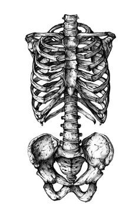

Ana rules
Ana rules that help me stay on track.

Hier kommt dein Text hin. Du kannst hier so viel schreiben, wie du möchtest. Der Text steht direkt unter dem Bild.
Pro ana rules
6. Think before you eat. Don't eat while distracted (TV, etc). Stop and consider if you really want to eat that then consciously give yourself permission.
7. 4 100-calorie meals is better than one 400-calorie meal.
8. Never eat anything bigger than about a cup, your stomach will expand and you'll get hungry more. If you need to, eat more frequently, not bigger amounts.
9. Slim-Fast and other "healthy" bars and shakes have more carbs and calories than in the meal they're intended to replace. Stay away.
10. Drink at least a glass of water every hour. It's better for weight loss to sip throughout the day than to chug a full glass.
11. Drink up to a shot of apple cider vinegar before eating.
12. Ice or gum are good food substitutes. Celery works too if you're really hungry.
13. Use small, dark colored plates. Dark blue or black makes you eat less, and smaller plates and utensils cause you to take smaller portions from the start.
14. Make a list and pledge to never, ever eat it again. Eventually there will be none left.
15. Eat in front of a mirror, naked or in underwear if possible. Make a list of "bad" foods and look at it when you want to eat.
16. Eat a lot of fiber for digestive health and low calories.
17. Create a methodical routine for eating. Cut food into tiny pieces, count your bites and the number of times you chew, set your utensils down between bites, and sip water between bites.
18. Eat higher-calorie items earlier in the day so you have more time to burn them off.
19. When you go out, take very little money or only enough to buy whatever non-food item you plan on buying.
20. Don't take bites, either from others' food or while cooking.
21. Write down everything you eat and its calories. You can also write down how you're feeling, who you're with, place, time, and why you chose to eat it.
22. Wear a rubber band around your wrist and snap it when you want to eat.
23. Set a time you cannot eat past. Then make a rule that you cannot eat before the next morning.
24. You shouldn't eat for at least 3 hours before going to bed.
25. Have a peppermint or peppermint tea.
26. Brush your teeth when you want to eat.
27. Press on your stomach when it grumbles.
28. Carry a list of all the reasons you want to be thin and avoid food.
29. Cut a ribbon the size you want your waist to be and wrap it around your wrist like a bracelet.
30. Always leave at least one bite of food on your plate.
31. Save $1 for every meal you don't eat, then use the money to buy yourself a non-food present.
32. Friends will only get in the way. Avoid them until you reach your goals.
33. Never eat in secret.
34. Never eat out of a box or jar. Always eat from a plate or bowl.
35. Give clothes away as they get too big for you.
36. If you live alone, put thinspo and/or reverse thinspo pictures on the pantry and refrigerator.
37. When you have hunger pangs, picture your stomach eating away your fat.
38. Coffee is an appetite suppressant. Drink it black or with no-calorie sweetener.
39. Count your bites and the number of times you chew them.
40. Paint your nails so you can't eat until the polish dries.
41. Drink water before eating. If you're still hungry, drink green tea or broth.
42. Eat low-calorie foods with strong flavors.
43. Do not eat anything unless you know the exact amount of calories in it.
44. Chew gum while cooking.
45. Keep food out of sight and stay away from food and the kitchen.
46. Keep a pocket thinspo in your wallet with your cash so you won't spend money on food.
47. For sweet cravings, lick a chopstick and dip it into a diet Swiss Miss pack.
48. Write your current weight on one hand, and your goal weight on the other.
49. The Four D's: Distance yourself from food. Distract yourself. Delay eating. Decide what your goals really are.
50. Green tea raises metabolism and is very good for the skin and overall health.
51. Hot water with lemon is another good morning drink.
52. Spicy foods raise metabolism.
53. Drinking apple cider vinegar is said to raise metabolism.